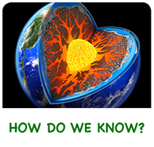
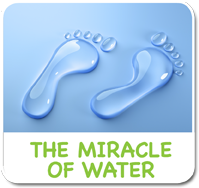

<!-- i-C-a -->
<div data-role="page" id="wonderscience2">
 
  
  <div data-role="content" style="overflow:hidden !important;">
    
    <div id="titleb-holder"><h1 style="margin-top:184px;">The Wonders of Science</h1></div>
    
    <div style="width:90%;margin:auto;">
      <div class="aclink"><a href="#" data-transition="slide"></a></div>
      <div class="aclink"><a href="#" data-transition="slide"></a></div>
      <div class="aclink"><a href="#" data-transition="slide" id="iwmovielink"></a></div>
      <div class="aclink"><a href="#" data-transition="slide"></a></div><br>
      <div class="aclink"><a href="#" data-transition="slide"></a></div>
      <div class="aclink"><a href="#" data-transition="slide"></a></div>
      <div class="aclink"><a href="#" data-transition="slide"></a></div>
      <div class="aclink"><a href="#" data-transition="slide"></a></div>
    </div>
    <div class="botlogoholder"><a href="home.html" class="homelinkbh"></a></div>
    <div id="pre-iw" style="width:1024px;height:748px;position:absolute;left:0px;top:0px;visibility:hidden;background:#000000;">
      <div class="previdcontainer">
        <video id="iwvideo" width="1024" height="722" preload>
          <source src="video/invisibleworldintro.m4v" type="video/mp4">
       </video>
     </div>
    </div> <!--/pre-iw -->
  </div> <!-- end content -->  
    <script>
      $(function() {
        $("#wonderscience2").swipe( { swipeRight:goBack, allowPageScroll:"auto"} );
      });
        
      function goBack() {
        $.mobile.changePage("home.html");
        sciencesoundbg.pause(); sciencesoundbg.currentTime = 0; 
        mainaudiobg.play();
      }
      
      $('#iwmovielink').on('tap', function() { 
        sciencesoundbg.pause(); sciencesoundbg.currentTime = 0;
        $("#pre-iw").css({"visibility":"visible", "z-index":2});
        iwvideo.play();
      });
      
      $("#iwvideo").on('tap', function() {
        //if(videoEvent != undefined){ videoEvent = undefined; return; }
        iwvideo.pause();
        iwvideo.currentTime = 0;
        invisibleworldbg.play();
        $.mobile.changePage("sub-wonderscience-invisibleworld.html");
      });
      
      $('.homelinkbh').on('tap', function() { 
        mainaudiobg.play(); sciencesoundbg.pause(); sciencesoundbg.currentTime = 0; 
      });
    </script>
</div>